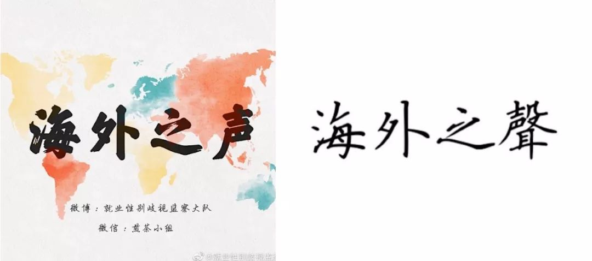

海外19年上|好风凭借力，送我上青云
18年9月，海外之声小组成立，为读者介绍海外消除就业性别歧视方面的经验。继去年上线了4季度的季刊后，我们继续做了19年上半年的半年刊。希望能借助海外之风，消除国内就业性别歧视，为女性实现职业理想扫清障碍。
1月，英国女记者汉娜发了一条推特“我4岁的女儿回家之后对我说，只有她是一名男孩才能成为消防员。我告诉她，女孩也能成为消防员。但她说：‘我在书中看到的消防员都是男性，我不想成为其中唯一的女性。’请问各位，有什么关于女性消防员的书或者视频可以推给她看吗？”评论里：她收到了关于很多国家女性消防员情况的回复。
2月，沙特阿拉伯任命利马公主为驻美大使，这是沙特阿拉伯第一位女性大使。她的父亲也是一名驻美大使，所以她长期生活在华盛顿，在当地大学毕业后，她回到阿拉伯，致力于提高女性教育和健康。
3月，印度议会的选举有接近9亿人具备选民资格，大量的印度妇女也将参与投票，这次投票可能会出现女性选民多于男性的情况。据了解，印度的投票性别差距一直在缩小，在2/3的邦，女性投票率高于男性。为了保障女性安全投票，政府在今年的大选中设置了女性投票所，还在每个投票所内至少安排一名女性警察执勤。
4月，相关调查显示，日本已婚女性最希望丈夫分担的是家务是做饭，尽管事实情况不尽乐观。ISSP的一项调查显示，在夫妻双方均工作的情况下，94.9%的女性回答做法的工作由自己承担，而在美国这一比例为60%。从统计数据来看，日本男性最不愿意帮忙做饭。
5月，瑞士支持家庭协会的一项研究调查显示，具有大学文化水平的女性怀孕生子、暂别职场的牺牲和代价最为惨重。当她们重返职场时，人均年薪会无形中缩水2万瑞郎（折合成人民币约13.76万元）。放眼整个职业生涯，因为担任全职妈妈暂别职场的经济代价或高达47万瑞郎（折合成人民币323.45万元）。
6月，美国阿拉巴马州通过严格反堕胎法案后不久，一名27岁的州内女性在与他人争吵过程中被对方枪击腹部，导致失去了5个月的胎儿。随后，她被指控谋杀罪。警方的说法是，胎儿是整个事件的唯一受害者，而母亲是杀人犯，这一史无前例的指控在美国引起公愤。
19年上半年刊 下载地址
手机版
链接: https://pan.baidu.com/s/1QDYy1EyUvKJEREvp-LEoEw 提取码: qvc8
电脑版
链接: https://pan.baidu.com/s/1Pnva5kx4G_0a7sycBXUmRQ 提取码: v9yb

海外之声club 上半年动态
除了认真的选题码字外，我们上半年也有一些新的动态，分享给大家～
1.内容方面
除了关注就业性别歧视问题外，我们还关注性骚扰、生育自主权、性别刻板印象、性少数群体平等就业权等议题。未来，围绕着女性就业，我们将关注更多交叉性的领域。
2.志愿者变动
海外组一直是两名常任编辑，一名在日本学习的志愿者因为学业结束的原因暂停，我们顺利的找到了另一位靠谱的志愿者来接替她的工作。
3.换了新的logo

（左图为6月17日 — 今使用的新logo）
4.海外月刊常态化
在煎茶小组负责人的支持下，我们决定将海外之声每月的内容汇总，形成月刊，发布在微信上。目前，已经完成了7月刊。
5.翻译外文文章
鉴于海外之声日报篇幅有限，我们和志愿者一起翻译了一些外媒文章和报告。目前，已经完成了《妇女及其未来工作前景》、《女生物学家利用虫卵挑战生物论》、《只有7%的消防员是女性，她想改变这一现状》等6篇文章。
联系我们：我们建了海外之声读者交流群，如需入群，请私信后台“海外之声+微信号”。志愿者会添加您的微信，并加您入群。